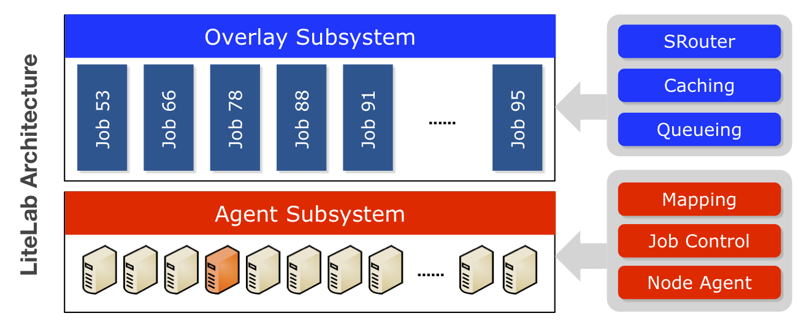
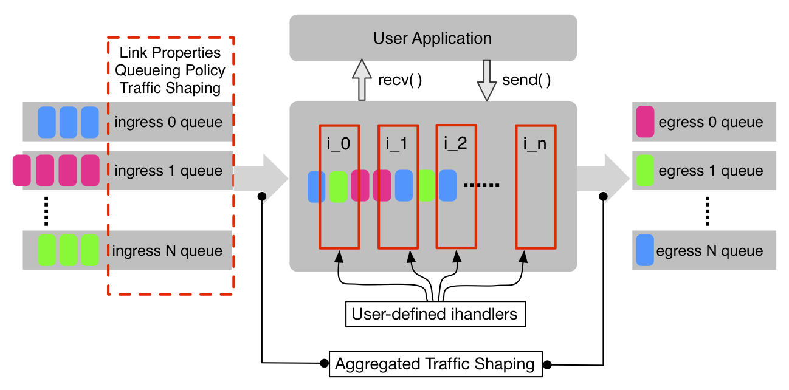
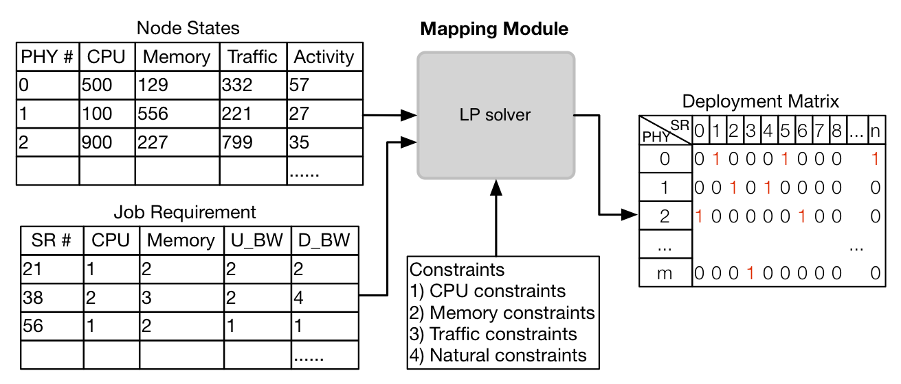

LiteLab is a light-weight platform specialized for large-scale networking experiments. It takes advantages of overlay network techniques and power of computing cluster, providing a flexible experiment platform with many uses. LiteLab helps researchers reduce the experiment complexity and speeds up experiment life-cycle, and at the same time, provides satisfying accuracy.
Download technical report: "LiteLab: Efficient Large-scale Network Experiments"
Download source code: LiteLab code @ Github
LiteLab can easily scale up the experiment to tens of thousands of nodes given any topology. Configuration and setup are simple.
The simulated router is highly customizable and extensible. Plugging in user-defined modules requires minimum overheads.
LiteLab utilizes and allocates the resources wisely based on the current load on the computing cluster.
The goal of LiteLab is to provide an easy to use, fully-fledged network experiment platform. Figure 1 shows the general system architecture. LiteLab consists of two subsystems: Agent Subsystem and Overlay Subsystem.

Figure 1: LiteLab architecture
SRouter is the most critical component in Overlay Subsystem. It is a software abstraction of a realistic router. Due to its light-weight, multiple SRouters can run on one node. Users can configure many parameters of SRouters, e.g., link properties (delay, loss rate, bandwidth), queue size, queuing policy, and so on. Figure 2 shows the internal mechanism of SRouter.

Figure 2: SRouter internal mechanism
LiteLab is highly customizable and extensible. It is very simple to plug in user-defined modules without modifying the code and substitute default modules. SRouter can also be used as end-system instead of doing simple routing task. When used as end-system, user-implemented applications can be run on top of it.
LiteLab uses Mapping module to map virtual resources to physical resources. The goal is to maximize resource utilization, and also to guarantee no violation of physical capacity. Four metrics are taken into account: CPU load, network traffic, memory usage and use of pseudo-terminal devices. The core of mapping module is an LP solver. As the figure 3 shows, Mapping module takes node states and job description as inputs, and outputs the optimal deployment matrix.

Figure 3: An LP solver for resources allocation
For the detailed information of LiteLab and information on how you can download it, please contact following people:
Liang Wang, Ph.D., Research Associate
Computer Laboratory, Cambridge University.
Prof. Jussi Kangasharju, Professor
Department of Computer Science, University of Helsinki.
{kind=link}
{kind=link}
{kind=link}